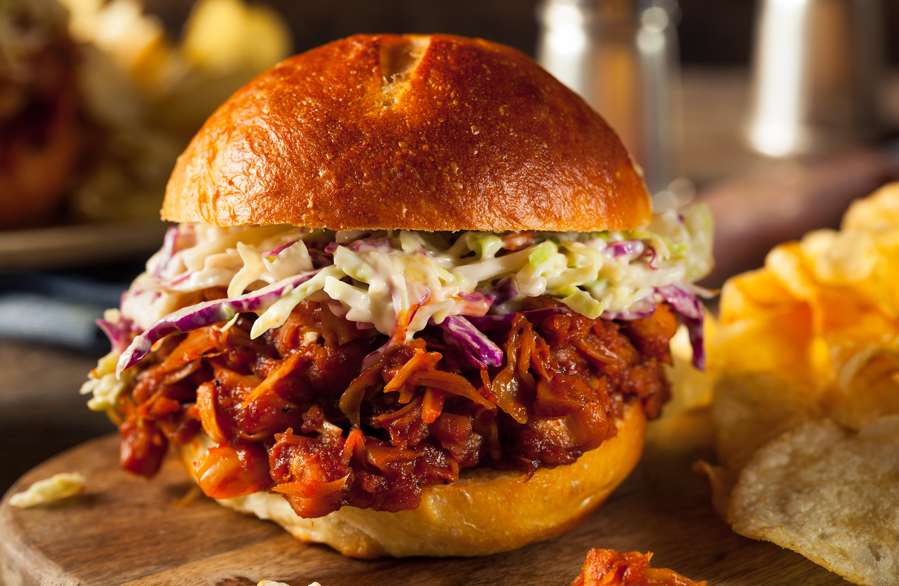

BBQ Jackfruit Sandwiches

Description
This is a delicious vegan alternative to the traditional pulled pork sandwich. Topped with caramelized onions and crunchy coleslaw on a soft bun, this sandwich is perfect for your backyard BBQ.
Ingredients
- 1 can jackfruit, drained and pulled
- bbq seasoning
- bbq sauce
- 1/2 onion, chopped
- 3 cloves garlic, minced
- 1/2 tbsp olive oil
- vegan coleslaw
- caramlized onions
- burger buns
- Coat jackfruit in BBQ seasoning.
- Saute onions and garlic in olive oil until onions are translucent.
- Add jackfruit and saute 5 minutes.
- Add BBQ sauce and saute for another 10 minutes.
- Add to toasted burger bun.
- Add BBQ sauce to taste and top with caramelized onions and coleslaw.
- Enjoy!